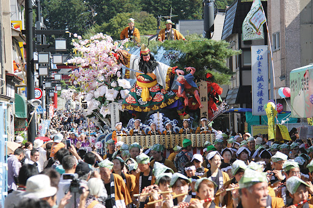

盛岡市の秋の風物詩といえば、例年9月14日～16日に行われる「盛岡秋まつり山車」。
期間中、歴史や歌舞伎を題材にした山車が「ヤーレヤーレヤーレヤレー」の掛け声、太鼓やお囃子とともに、盛岡市中心部を練り歩く。
山車には歌舞伎や歴史上の名場面が豪華絢爛に飾りつけられ、太鼓の音色と独特の南部木遣節とともに各組総勢200人ほどの引き手が賑やかに練り歩く。14日午後には八幡下りパレードが開催される。
盛岡市の秋の風物詩といえば、例年9月14日～16日に行われる「盛岡秋まつり山車」。
期間中、歴史や歌舞伎を題材にした山車が「ヤーレヤーレヤーレヤレー」の掛け声、太鼓やお囃子とともに、盛岡市中心部を練り歩く。
山車には歌舞伎や歴史上の名場面が豪華絢爛に飾りつけられ、太鼓の音色と独特の南部木遣節とともに各組総勢200人ほどの引き手が賑やかに練り歩く。14日午後には八幡下りパレードが開催される。
盛岡市の無形民俗文化財に指定されている盛岡八幡宮祭りの山車行事は 1709(宝永6)年9月14日、南部藩の町造りが完成したのを祝い、 全町の若 者ら町衆がそれぞれ趣向をこらした丁印(ちょうじるし。町の紋章・ エン ブレムで、各町の消防、自治的組織の標識)などを盛岡八幡宮に奉納して 3日間御城下目抜き通りを 練り歩いたのが始まりと伝えられています。
山車（だし）は、日本の伝統的な祭りで使用される車両や台車で、豪華な装飾や彫刻が施され、祭りの際に町を練り歩く。
地域ごとに異なるスタイルやデザインがあり、神社や寺院の祭りで重要な役割を果たす。
山車は神聖視され、地域社会に幸運や豊穣をもたらすと信じられている。
盛岡秋祭り山車では、毎年10台以上の豪華絢爛な山車が盛岡市内を練り歩きます。
〒020-8530
岩手県盛岡市内丸12-2 盛岡市役所別館7階
☏ 019-626-7539
fax 019-604-1717